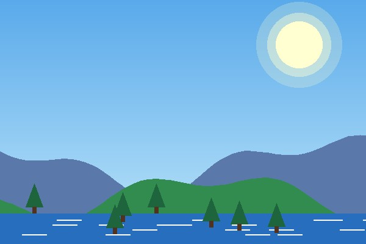

Thực hành saturate, grayscale, contrast, brightness, blur, invert, sepia, hue-rotate và opacity.

.fx{display:inline-block;margin:8px;text-align:center;font-size:13px;vertical-align:top}
.fx img{display:block;width:170px;height:115px;object-fit:cover;border-radius:8px;transition:filter .5s}
.fx figcaption{margin-top:4px}
.saturate img{filter:saturate(300%)}
.grayscale img{filter:grayscale(100%)}
.contrast img{filter:contrast(200%)}
.brightness img{filter:brightness(150%)}
.blur img{filter:blur(4px)}
.invert img{filter:invert(100%)}
.sepia img{filter:sepia(100%)}
.hue img{filter:hue-rotate(120deg)}
.opacity img{filter:opacity(40%)}
.fx:hover img{filter:none}